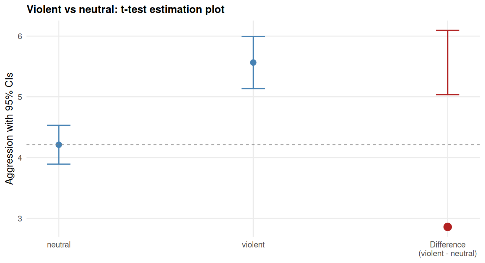
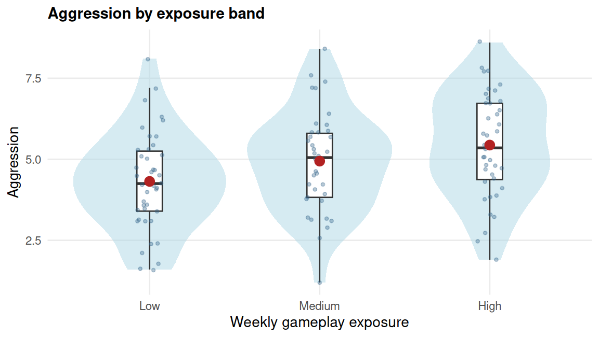
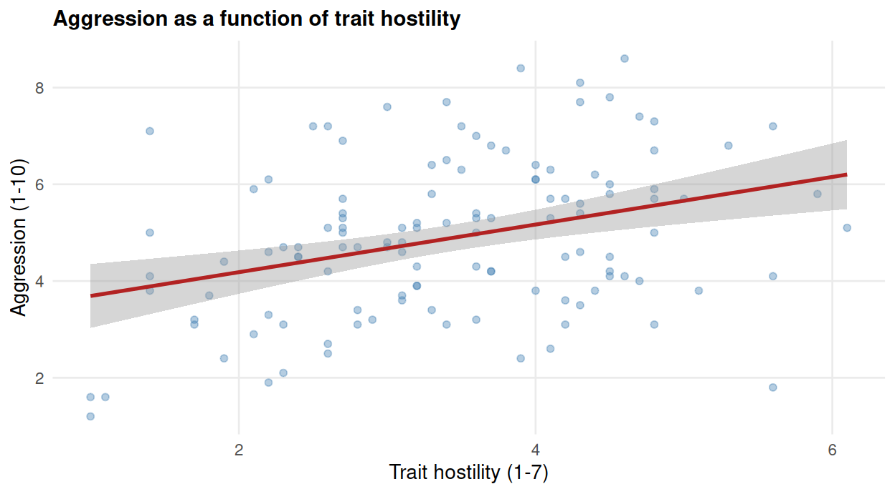
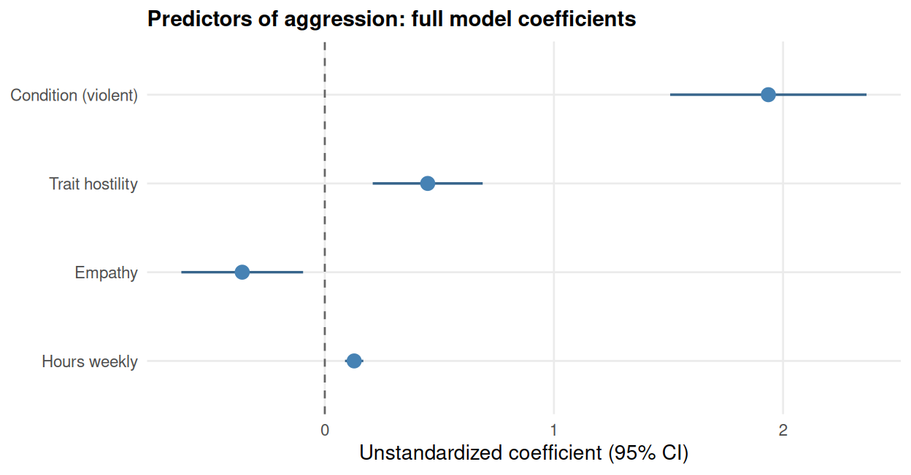
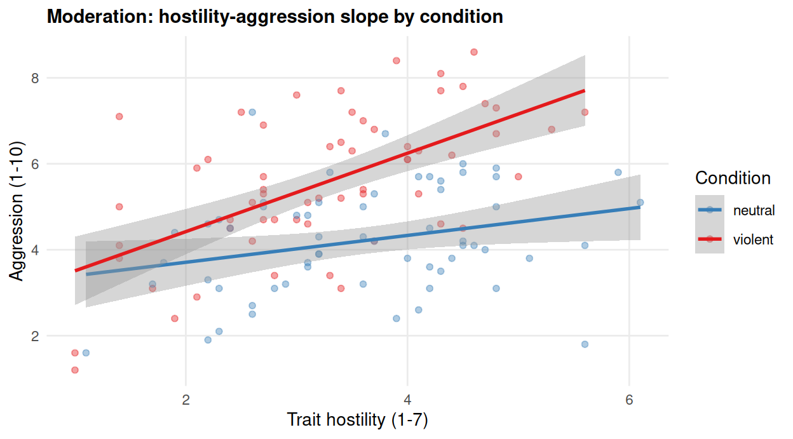
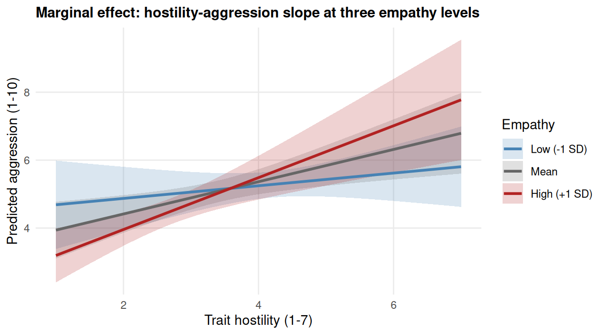

vgames <- read.csv("data/vgames_study.csv")37 Use cases: visualizations and tables for common analyses
This chapter pulls together the tools developed in Chapters 30 to 36 and applies them, one analysis type at a time, to the most common test types in psychology. For each test type, we walk through the right visualization and the right table. The chapter is meant to be used as a practical reference. When you sit down to write up a particular kind of analysis, look up the corresponding section here, copy the figure and table templates, and modify them for your data.
The five test types covered are:
- The t-test (independent and paired)
- The ANOVA (one-way and factorial)
- Simple regression
- Multiple regression
- Moderation (interaction effects, with marginal plots)
We use the vgames_study data throughout.
37.1 T-tests: comparing two means
The independent-samples t-test compares the mean of a continuous outcome between two groups. The right visualization is a side-by-side distribution plot (recall Chapter 31), with the means and 95% CIs visible, ideally accompanied by the difference and its CI on a floating axis. The right table is short: descriptives per group, the t-statistic with degrees of freedom, the p-value, the Cohen’s d with its CI.
# Compute summary statistics
ttest_summary <- vgames |>
group_by(condition) |>
summarize(
m = mean(aggression),
se = sd(aggression) / sqrt(n()),
n = n(),
lower = m - qt(0.975, n - 1) * se,
upper = m + qt(0.975, n - 1) * se,
.groups = "drop"
)
# Welch t-test for the difference
welch <- t.test(aggression ~ condition,
data = vgames, var.equal = FALSE)
diff_m <- as.numeric(diff(welch$estimate)) * -1
diff_ci <- welch$conf.int * -1
# Layout: means + difference on floating axis
mean_neutral <- ttest_summary$m[ttest_summary$condition == "neutral"]
mean_df <- data.frame(
label = c("neutral", "violent",
"Difference\n(violent - neutral)"),
xpos = c(1, 2, 3),
m = c(mean_neutral,
ttest_summary$m[ttest_summary$condition == "violent"],
mean_neutral + diff_m),
lower = c(ttest_summary$lower[ttest_summary$condition == "neutral"],
ttest_summary$lower[ttest_summary$condition == "violent"],
mean_neutral + min(diff_ci)),
upper = c(ttest_summary$upper[ttest_summary$condition == "neutral"],
ttest_summary$upper[ttest_summary$condition == "violent"],
mean_neutral + max(diff_ci)),
is_diff = c(FALSE, FALSE, TRUE)
)
ggplot(mean_df, aes(x = xpos, y = m)) +
geom_errorbar(aes(ymin = lower, ymax = upper, color = is_diff),
width = 0.12, linewidth = 0.6) +
geom_point(aes(color = is_diff, size = is_diff)) +
geom_hline(yintercept = mean_neutral, linetype = "dashed",
color = "grey50", linewidth = 0.3) +
scale_x_continuous(breaks = 1:3,
labels = mean_df$label) +
scale_color_manual(values = c("steelblue", "firebrick"),
guide = "none") +
scale_size_manual(values = c(2.5, 3.5), guide = "none") +
labs(x = NULL, y = "Aggression with 95% CIs",
title = "Violent vs neutral: t-test estimation plot") +
theme_minimal(base_size = 10.5) +
theme(plot.title = element_text(face = "bold", size = 11),
panel.grid.minor = element_blank())
The two left points are the group means with their CIs. The right point is the difference between the two means, plotted on the same y-scale relative to the neutral mean (the dashed reference line). The CI on the difference directly answers the inferential question “is the difference different from zero?”, with no eyeball-overlap calculation required.
The compact reporting form (Chapter 35) is:
Participants in the violent condition scored higher on aggression (M = 5.56, SD = 1.58, n = 60) than participants in the neutral condition (M = 4.21, SD = 1.60, n = 60), t(117.98) = 4.65, p < .001, Cohen’s d = 0.85, 95% CI [0.46, 1.21].
A short companion table is rarely needed for a single t-test, but for a series of t-tests one row each is helpful.
37.2 ANOVA: comparing multiple groups
For three or more groups on a single factor, an ANOVA tests whether any group differs from any other. The right visualization shows the distributions per group; the right reporting includes the overall F-test, the omega-squared (or partial eta-squared) effect size with its CI, and follow-up pairwise comparisons if the overall test is significant.
For a factorial ANOVA (two or more factors), the picture is the same idea applied to each main effect and the interaction.
# Manufacture a three-level factor for illustration
set.seed(2)
vgames$exposure_band <- cut(vgames$hours_weekly,
breaks = quantile(vgames$hours_weekly,
probs = c(0, .33, .67, 1)),
include.lowest = TRUE,
labels = c("Low", "Medium", "High"))
ggplot(vgames, aes(x = exposure_band, y = aggression)) +
geom_violin(fill = "lightblue", color = NA, alpha = 0.5) +
geom_boxplot(width = 0.15, fill = "white",
outlier.shape = NA) +
geom_jitter(width = 0.08, alpha = 0.35, color = "steelblue4",
size = 0.9) +
stat_summary(fun = mean, geom = "point",
color = "firebrick", size = 3) +
labs(x = "Weekly gameplay exposure",
y = "Aggression",
title = "Aggression by exposure band") +
theme_minimal(base_size = 10.5) +
theme(plot.title = element_text(face = "bold", size = 11),
panel.grid.minor = element_blank())
The combined violin-boxplot-jitter (Chapter 31) shows the distribution per group, the means in red sit on top of the data, and the reader can compare both the central tendency and the spread across groups visually.
For the reporting:
fit_aov <- aov(aggression ~ exposure_band, data = vgames)
summary(fit_aov) Df Sum Sq Mean Sq F value Pr(>F)
exposure_band 2 25.9 12.949 5.375 0.00584 **
Residuals 117 281.9 2.409
---
Signif. codes: 0 '***' 0.001 '**' 0.01 '*' 0.05 '.' 0.1 ' ' 1A one-way ANOVA tested the effect of gameplay exposure band on aggression. The omnibus test was not significant, F(2, 117) = [F value], p = [p value], partial eta-squared = .[xx], 95% CI [.000, .xx].
For a significant overall test, follow up with pairwise comparisons (Tukey’s HSD via TukeyHSD(), or planned contrasts) and report each pair’s mean difference with CI and effect size.
37.3 Simple regression
A simple regression with one continuous predictor is most naturally visualized as a scatter with the fitted line and confidence band (Chapter 31). The corresponding table is essentially the lm() summary in cleaned form.
fit_simple <- lm(aggression ~ trait_hostility, data = vgames)
ggplot(vgames, aes(x = trait_hostility, y = aggression)) +
geom_point(alpha = 0.4, color = "steelblue") +
geom_smooth(method = "lm", se = TRUE,
color = "firebrick", formula = y ~ x) +
labs(x = "Trait hostility (1-7)",
y = "Aggression (1-10)",
title = "Aggression as a function of trait hostility") +
theme_minimal(base_size = 10.5) +
theme(plot.title = element_text(face = "bold", size = 11),
panel.grid.minor = element_blank())
The dots are the participants, the line is the predicted aggression at each level of trait hostility, the shaded band is the 95% CI on the prediction line (computed automatically by geom_smooth()). For the reader, this figure answers two questions at once: how strong is the linear association, and how precisely is it estimated?
The reporting:
A simple linear regression predicted aggression from trait hostility, F(1, 118) = [F value], p < .001, R² = [.xxx], adjusted R² = [.xxx]. Trait hostility was a significant positive predictor, b = [value], SE = [value], t(118) = [value], p < .001, 95% CI [low, high], beta = [value].
37.4 Multiple regression
For two or more predictors, the right table is a multi-column regression table (Chapter 34), and the right figure is the coefficient plot (Chapter 36). When two predictors are of substantive interest, a side-by-side coefficient plot for both standardized and unstandardized coefficients can be informative.
fit1 <- lm(aggression ~ condition, data = vgames)
fit2 <- lm(aggression ~ condition + trait_hostility, data = vgames)
fit3 <- lm(aggression ~ condition + trait_hostility + empathy +
hours_weekly, data = vgames)
if (requireNamespace("modelsummary", quietly = TRUE)) {
library(modelsummary)
modelsummary(
list("Condition only" = fit1,
"+ Hostility" = fit2,
"Full model" = fit3),
stars = TRUE,
output = "gt",
fmt = 3,
coef_rename = c(
"conditionviolent" = "Condition (violent)",
"trait_hostility" = "Trait hostility",
"empathy" = "Empathy",
"hours_weekly" = "Hours weekly"
),
notes = "*Note*. Standard errors in parentheses. *p* < .05 (*), *p* < .01 (**), *p* < .001 (***)."
)
} else {
cat("(modelsummary not installed; on your machine the table would show\n")
cat("the three nested models side by side with coefficients, SEs, and stars.)\n")
}| Condition only | + Hostility | Full model | |
|---|---|---|---|
| (Intercept) | 4.212*** | 2.021*** | 2.996** |
| (0.189) | (0.428) | (0.950) | |
| Condition (violent) | 1.353*** | 1.571*** | 1.936*** |
| (0.267) | (0.242) | (0.216) | |
| Trait hostility | 0.607*** | 0.449*** | |
| (0.109) | (0.121) | ||
| Empathy | -0.360** | ||
| (0.134) | |||
| Hours weekly | 0.128*** | ||
| (0.020) | |||
| Num.Obs. | 120 | 120 | 120 |
| R2 | 0.179 | 0.351 | 0.529 |
| R2 Adj. | 0.172 | 0.339 | 0.513 |
| AIC | 436.0 | 409.8 | 375.2 |
| BIC | 444.3 | 420.9 | 391.9 |
| Log.Lik. | -214.983 | -200.882 | -181.607 |
| RMSE | 1.45 | 1.29 | 1.10 |
| + p < 0.1, * p < 0.05, ** p < 0.01, *** p < 0.001 | |||
| *Note*. Standard errors in parentheses. *p* < .05 (*), *p* < .01 (**), *p* < .001 (***). | |||
For the visualization, a coefficient plot from the full model:
if (requireNamespace("broom", quietly = TRUE)) {
library(broom)
coef_df <- tidy(fit3, conf.int = TRUE) |>
filter(term != "(Intercept)") |>
mutate(label = c("Condition (violent)", "Trait hostility",
"Empathy", "Hours weekly"))
coef_df$label <- factor(coef_df$label, levels = rev(coef_df$label))
ggplot(coef_df, aes(x = estimate, y = label)) +
geom_vline(xintercept = 0, linetype = "dashed", color = "grey40") +
geom_errorbarh(aes(xmin = conf.low, xmax = conf.high),
height = 0, linewidth = 0.6,
color = "steelblue4") +
geom_point(size = 3, color = "steelblue") +
labs(x = "Unstandardized coefficient (95% CI)",
y = NULL,
title = "Predictors of aggression: full model coefficients") +
theme_minimal(base_size = 10.5) +
theme(plot.title = element_text(face = "bold", size = 11),
panel.grid.minor = element_blank())
}
The table shows everything; the plot makes the substantive pattern visible at a glance. Used together, they reinforce each other.
37.5 Moderation and marginal plots
A moderation analysis tests whether the slope of one predictor depends on the value of another. When the moderator is categorical (as in condition × trait_hostility), the figure is two regression lines, one per moderator level. When the moderator is continuous, the figure shows the predicted relationship at several representative values of the moderator (typically the mean and ±1 SD).
ggplot(vgames, aes(x = trait_hostility, y = aggression,
color = condition)) +
geom_point(alpha = 0.4) +
geom_smooth(method = "lm", se = TRUE,
formula = y ~ x) +
scale_color_manual(values = c("neutral" = "#377eb8",
"violent" = "#e41a1c"),
name = "Condition") +
labs(x = "Trait hostility (1-7)",
y = "Aggression (1-10)",
title = "Moderation: hostility-aggression slope by condition") +
theme_minimal(base_size = 10.5) +
theme(plot.title = element_text(face = "bold", size = 11),
panel.grid.minor = element_blank())
If the two slopes differ noticeably, the visual fingerprint of moderation (Chapter 18) is present: the lines are not parallel. If they were parallel, the relationship would be the same in both conditions and there would be no interaction.
For the reporting:
The interaction between trait hostility and condition was significant, b = [value], SE = [value], t(116) = [value], p = [value], 95% CI [low, high]. Simple-slopes analysis indicated that trait hostility predicted aggression more strongly in the violent condition (b = [value], SE = [value], p < .001) than in the neutral condition (b = [value], SE = [value], p = [value]).
For a continuous moderator, the equivalent figure shows the predicted line at several moderator values:
# Predict at low, mean, high empathy
mean_emp <- mean(vgames$empathy)
sd_emp <- sd(vgames$empathy)
fit_mod <- lm(aggression ~ trait_hostility * empathy,
data = vgames)
newdata <- expand.grid(
trait_hostility = seq(1, 7, by = 0.1),
empathy = c(mean_emp - sd_emp, mean_emp, mean_emp + sd_emp)
)
preds <- predict(fit_mod, newdata, interval = "confidence")
newdata$predicted <- preds[, "fit"]
newdata$lower <- preds[, "lwr"]
newdata$upper <- preds[, "upr"]
newdata$empathy_level <- factor(
rep(c("Low (-1 SD)", "Mean", "High (+1 SD)"),
each = nrow(newdata) / 3),
levels = c("Low (-1 SD)", "Mean", "High (+1 SD)")
)
ggplot(newdata, aes(x = trait_hostility, y = predicted,
color = empathy_level, fill = empathy_level)) +
geom_ribbon(aes(ymin = lower, ymax = upper), alpha = 0.2,
color = NA) +
geom_line(linewidth = 1) +
scale_color_manual(values = c("steelblue", "grey40", "firebrick")) +
scale_fill_manual(values = c("steelblue", "grey40", "firebrick")) +
labs(x = "Trait hostility (1-7)",
y = "Predicted aggression (1-10)",
color = "Empathy",
fill = "Empathy",
title = "Marginal effect: hostility-aggression slope at three empathy levels") +
theme_minimal(base_size = 10.5) +
theme(plot.title = element_text(face = "bold", size = 11),
panel.grid.minor = element_blank())
The three lines show the predicted relationship between trait hostility and aggression at three representative levels of empathy. If the lines are parallel, there is no interaction; if they fan out or converge, there is a moderation effect, and the visual pattern shows in which direction the moderator changes the relationship. This kind of plot is sometimes called a marginal effects plot or a conditional effects plot and is the standard visualization for continuous moderation.
37.6 The general principle
Each analysis type has a natural visualization that puts the substantive answer directly in front of the reader. The natural visualization is rarely the bar chart with error bars. It is, depending on the analysis: an estimation plot with a floating difference axis (t-test), a combined violin-jitter-mean by group (ANOVA), a scatter with fitted line (simple regression), a coefficient plot (multiple regression), or a multi-line marginal effects plot (moderation). Each of these is built with the same ggplot2 grammar (Chapter 30) and stacks the same kinds of layers; the difference is which layers, in which order, are most appropriate to the analysis.
When you reach for a visualization, ask first what the substantive question is, then choose the figure that answers it most directly. The corresponding table (Chapter 34) and reporting style (Chapter 35) follow from there.
37.7 Check your understanding
1. What is the appropriate visualization for an independent-samples t-test?
2. What is the appropriate visualization for a one-way ANOVA?
3. What is the appropriate visualization for a simple regression with one continuous predictor?
4. What is the appropriate visualization for a multiple regression with several predictors of similar substantive interest?
5. What is the appropriate visualization for a moderation (interaction) effect?
37.8 References
Cumming, G. (2014). The new statistics: Why and how. Psychological Science, 25(1), 7-29. https://doi.org/10.1177/0956797613504966